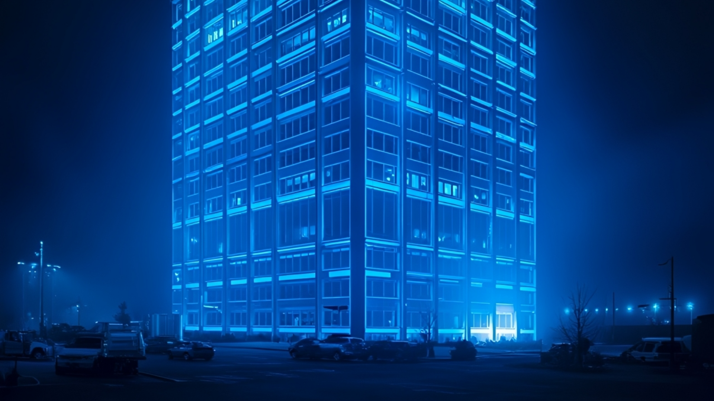
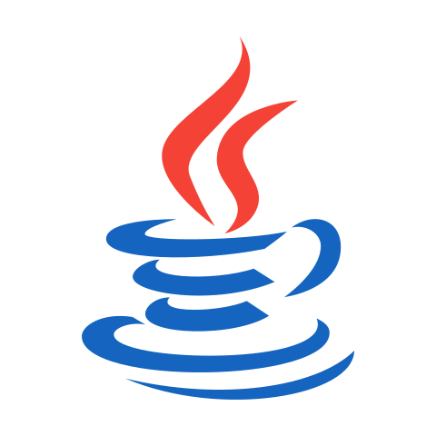
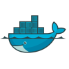
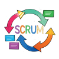
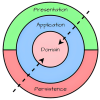
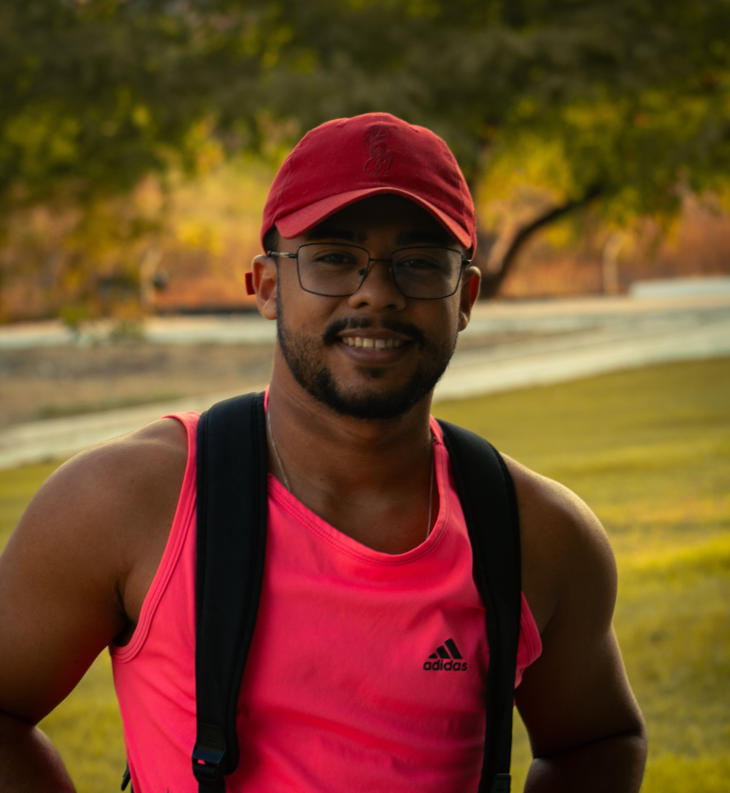

Como estamos construindo a nova Plataforma de Gestão de Ciclo de Vida do Fomento da FUNCAP, aplicando Engenharia de Software real no Setor Público.
• Arquitetura Defasada: Interface baseada em HTML Frames descontinuados e código
sem padronização ou reaproveitamento.
• Banco de Dados Crítico: Chaves compostas gigantescas, sem relacionamentos
claros e sem autovacuum.
• Vulnerabilidades: Dados sensíveis em GET, risco de SQL Injection/XSS e falhas
em backups íntegros.
• Arquitetura Limpa & OOP: Sistema modularizado, API RESTful desacoplada e
padrões modernos de Engenharia de Software.
• Banco Otimizado & Seguro: PostgreSQL modelado do zero, migrações controladas
via Flyway.
• Governo Digital: Automação de todo o ciclo (bolsas, auxílios, SEFAZ) e
integração via API com a Vitrine Tecnológica.
Da submissão da proposta, avaliação de mérito e contratação jurídica até a prestação de contas e transmissão de folha de pagamento para a SEFAZ — eliminando burocracia e acelerando a ciência no Ceará.

API RESTful em Java / Spring Boot. Banco PostgreSQL modelado do zero, versionado com Flyway e documentado com Swagger/OpenAPI.
Interface moderna em Next.js + TypeScript + React, oferecendo uma experiência rápida, acessível e responsiva para pesquisadores e cidadãos.

Uso intensivo de Docker para conteinerização, garantindo paridade total entre os ambientes de desenvolvimento e produção, além de CI/CD via Git Lab.

Atuação 100% remota com Daily Scrums, Sprints, Retrospectivas e gestão visual de fluxo (ClickUp), alinhada ao Governo Digital.
• Manipulação do Legado: O banco de dados Montenegro era extremamente frágil e
sem documentação, onde qualquer alteração incorria em alto risco de quebra.
• Complexidade Burocrática: Regras de negócio intrincadas do fomento público
(avaliações de mérito, tramitações jurídicas, remessas financeiras SEFAZ e prestação de
contas).
• Curva de Aprendizado: Traduzir requisitos legais e editais governamentais
para fluxos lógicos de software.
• Modelagem do Zero & Flyway: Em vez de remendar o banco antigo, modelamos uma
estrutura relacional limpa e modular, validando migrações incrementalmente.
• Rigor no Scrum: As Daily Scrums e o uso de diagramas UML foram vitais para
alinhar o entendimento da equipe de desenvolvimento e dos gestores da FUNCAP.
• Desacoplamento: Divisão do sistema em 11 módulos coesos (Usuário, Avaliação,
Jurídico, Recursos, Execução, Financeiro, Diretoria).

Aprender com o erro do legado: código limpo, OOP, versionamento (Git) e documentação (Swagger) são essenciais para que o software dure décadas e seja mantível por qualquer time.
Em sistemas governamentais e financeiros, proteção contra SQL Injection, XSS, criptografia de dados sensíveis e rotinas de backup íntegro são absolutamente inegociáveis.
Programar para o fomento à pesquisa é exercer cidadania. Uma plataforma rápida e transparente significa que bolsas e auxílios chegam mais cedo para quem faz ciência no Ceará.
Atuar remotamente simula o mercado global. Exige autogestão, comunicação assíncrona clara e domínio de ferramentas cloud para gerenciamento de servidores sem presença física.
Aprofundar o uso de filas (RabbitMQ/Kafka) e arquiteturas orientadas a eventos para aumentar a escalabilidade em dias de pico de submissão de chamadas públicas.
Expandir os conhecimentos em Kubernetes para gerenciar clusters de contêineres, garantindo alta disponibilidade e resiliência 24/7 para o cidadão.
Integrar Machine Learning e análise preditiva ao Módulo da Diretoria, transformando dados históricos em insights estratégicos para a tomada de decisão do Governo.
